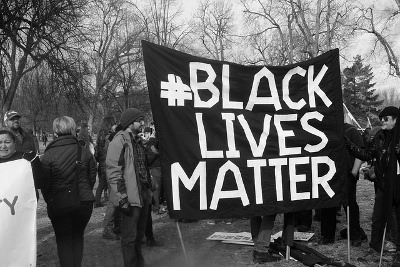
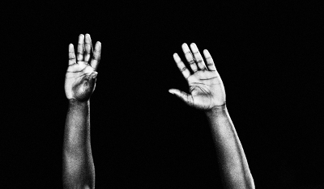

Organisasjonen har brukt sosiale medier aktivt BILDE for å fremme  budskapet sitt, og emneknaggen blacklivesmatter blir brukt på alt som omhandler organisasjonen på sosiale medier som for eksempel Instagram og Twitter. På grafen til høyre kan man se når hashtaggen har vært populært, men har variert i popularitet. Det som er gjentagende er at når det skjer situasjoner, som at uskyldige mennesker blir drept av politiet eller viktige personer nevner organisasjonen skyter populariteten i været. Et eksempel på dette er når presidentkandidaten Bernie Sanders forsvarte organisasjonen i en tv-debatt på CNN.
Til sammen har #blacklivesmatter blitt brukt nesten 11.8 millioner ganger (se graf), hvor en tredjedel av dette er positivt om organisasjonen, og omhandler alt fra informasjon til støtte. I tillegg til dette blir hashtaggen brukt på diverse produkter som
klær og kopper. Derfor kan man si at emneknaggen har gått fra å være en link til ny og mye informasjon, til å representere dagens situasjon for afro amerikanske i USA og representere organisasjonen.

En litt mer uventet måte organisasjonen har blitt mer kjent er via kjente artister som Beyonce og John Legend. I nyere tid har flere artister sunget om den urettferdige behandlingen afro amerkinaske får i USA, og selv om sangenen ikke direkte bruker ordene Black Lives Matter, har de et budskap som er veldig likt det organisasjonen står for. Noen eksempler på dette er i Beoynce sin musikkvideo
Formation, der ser man bilde av en vegg hvor det står «Don’t shoot us» som er et populært utsagn som har blitt brukt i flere protester. Et annet eksempel er Rhiannon Giddens' sin låt
«Cry no more» som ble skrevet etter masseskytingen i en kirke i South Carolina. Sangen ble skrevet for å sette lys på urettferdighetene og hvor ødelagt systemet som tar seg av de som er igjen etter masseskytingen er.
Man kan derfor si at emneknaggen har vært en an de viktigste grunnene til at Blacklivesmatter har blitt så stort, og den er den nest mest brukte emneknaggen innenfor
twitteraktivisme.